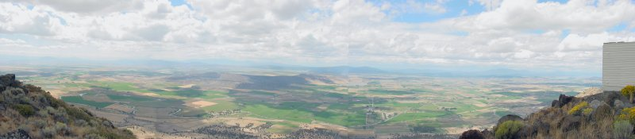

|
Eyewitness Accounts of Actions at the Headgates and their Impact By: Jeff Head - July 13, 2001 through The Present [LAST UPDATED - June 2008]  In April, 2001, a Federal Judge ruled in favor of a frivolous and flawed biological opinion put forth on behalf of the Endangered Species Act stating that the sucker fish in Klamath Lake required protection. In response to this, the Secretary of Interior, Gale Norton, appointed by President George W. Bush, made the decision to address the Judge's decision by cutting off ALL irrigation water to 90% of the farmers in the Klamath Basin, a number representing 1400 farming families in two states. The farmers have deeded rights to the irrigation water which attach to the irrigated land as an "appurtenance". In plain English, the farmers who own land in the Klamath Basin irrigated by Klamath Lake, own the irrigation water rights. Klamath Lake was built in the early 1900's specifically for irrigation and the project was supposed to revert to the farmers ownership when the construction costs were paid for. The costs were paid off, but the government never ceded over the project. Many of these families are veterans who were asked to homestead the land and farm it. They have deeds signed by Presidents of the United States. They organized and petitioned their government, they held a rally in May where 20,000 people asked for the decision to be reversed. All to no effect, no water flowed in May or June. The families became desparate. In late June, a single individual opened one headgate. The Bureau of Reclamation immediately closed it. A July 4th rally protesting that resulted in the gate being opened again. The government sent two US Marshals to insure the gates stayed closed. Later that week, a vote in the U.S. Senate to reverse conditions was defeated. With no relief imminent, with financial ruin at the door and with their rights being trampled by the government that should have protected them ... a few couragous farmers acted. What follows are eyewitness and particpant accounts of the actions of these farmers and their supporters.
CLICK HERE TO SIGN THE NATIONAL PETITION FOR THE KLAMATH BASIN CRISIS
[Please consider visiting these sites as well] The Attack on America Memorial Site - The Winning Iraqi Freedom Dedicatory Site
Copyright © 2001-2006 by Jeff Head, All Rights Reserved
|